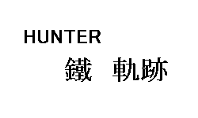

華代ちゃんシリーズ
Ｓｉｌｖｅｒ
作：バレット
このページは、華代ちゃんを応援しています（あなたの清き一票を！）。
「華代ちゃん」の公式設定については、以下のページを参照してください。
http://www7.plala.or.jp/mashiroyou/kayo_chan00.html
どこかの廃屋。
純白のワンピースは薄汚れ、少女の体は泥にまみれていた。
青年は何とかお湯の出るシャワーを彼女に浴びせ、丁寧にタオルで拭き、自分のコートを羽織らせて、バネの飛び出ているベッドに寝せた。
どのくらい時間がたっただろうか。
やっぱり廃屋の、ろうそくがともっているだけの机。
少女は目を覚まし、周囲をきょろきょろと見回した。衣擦れの音に気づき、青年は少女の寝ていたソファーを見た。
「やあ、おはよう。……といっても、今は夜だけどね」
少女の髪の色は、黒。闇にまぎれれば、見る人によっては不気味に見えるだろう。しかし白い肌にクリッとした目は、妖精のように愛らしい。
「あれ？ わたしは…… どうしたのでしょう？」
「空き地のど真ん中に倒れていたんだ、雨ざらしのままね。放っておくこともできないだろう？ だから、勝手ながら僕の家に連れて帰ったってわけさ」
「ここが、家ですか……？ どう見ても廃屋にしか見えませんが」
「僕は、この体以外の全てを失ってしまったからね」
青年の名前は、仙崎銀（せんざき ぎん）。齢、２４歳。
彼は、裕福でも貧乏でもない、ありふれた家庭に育っていた。しかし、１つの出来事をきっかけに、家族は崩壊し、彼を受け入れてくれる場所もなかった。
出来事とは、彼の父親が猟奇殺人を犯したこと。彼は逮捕され、彼の妻は自殺し、銀の兄と妹は精神を病んで施設に送られたものの、銀だけはそうさせてもらえなかった。
許容量オーバー。くだらない理由だった。
「そんなことが、あったんですか……」
「今、兄貴と妹は名前を全て変えて、幸せな人生を歩んでいると思う。それが、オレにとって唯一生きる希望なんだ」
「お兄さんか妹さんの家にお世話になるってことはできないんですか？」
「そうしたら、やつらの正体が猟奇殺人鬼の息子と娘だってことがばれるだろ？」
「あっ…… すみません、無神経なことを言ってしまいました」
「気にするなよ、華代ちゃん」
「ありがとうござい…… あれ？ どうしてわたしの名前を？」
銀は、鉄パイプにかかっているワンピースとポシェットを、親指でさした。
「無粋とは思ったが、中身を調べさせてもらった。セールスレディーの名刺が入っていた。１枚もらっといたよ、雨でぐしょぐしょだったけど」
「…………」
「もうひとつ、勝手に服を引っぺがしてシャワーを浴びせたこと」
「あっ！」
彼女——真城華代は、今になって自分が違う服を着ていることが分かった。その服、長いコートの下は、何もなし。
「あうっ……」
「言い訳はしないでおく、済まなかった」
正確な時を刻んでいるのだろうか、壁掛け時計は午前２時をさしている。
銀と華代は、暖かいシチューを食べていた。皿は一度割れたものを告ぎ接いだもの、スプーンは黒ずんでいる純銀のもの。スプーンは売れない。売ったところで生活が豊かになれるほどお金も入らないし、唯一の食器だ。
「お仕事は、何をなさっているんですか？」
「インターネットを介しての事務。その他。アーリー・ドッグという人物を頼って、Ｃ言語プログラミングを教えてもらってからは、あとは自力でジャバスクリプト、Ｃ＋＋言語、アセンブリ、いろいろと覚えて。ちなみに、中小企業のいくつかのホームページ製作もオレがやっているんだ」
「すごいですね」
「でも、このところめっきり仕事が減って、電気、水道に続いて、そろそろガスも止められてしまいそうなんだ」
「そんなにスキルを持っているのに……」
「ホームレスが年商数億の社長に上り詰めることもできる。それは自分の実力のほか、『それ以外の要素』が必要なんだ。何かのきっかけ、大きな力を持つ者との出会い、ひょっとした思い付き。実力だけでどうにかなるもんじゃないのが、社会なのさ」
「…………」
「ガスが止められたら、温かい料理も食べられなくなる。梅雨が明けて木枯らしが吹くと、雨もストックできなくなる。でもオレには、そのほかの術を知らない。ノートパソコンを片手に、ここで朽ちるしかないのさ」
「あれ？ でもノートパソコンの電力はどこから引っ張っているんですか？」
「ソーラー発電機。でも、やっとパソコンと冷蔵庫を動かせる程度さ」
「…………」
銀は、足元に食器を置いた。
夜の静けさに、時折吹く風。トタンがカタカタと揺れるその音は、まるで観客のいないステージの上で踊るピエロをあざ笑っているかのように、気に障ってしょうがない。
「さらに追い討ちをかけるのが」
「……？」
「癌だ。このまま生きながらえても、半年」
翌日は、晴天だった。
時計は、動いていた。正確な時を刻んでいるのなら、午前１０時過ぎ。
銀は、昨晩華代を寝かせた、バネが飛び出ているソファーから起きた。
「うーん…… 毎朝吐き気に襲われるのはいつになっても慣れるもんじゃねー」
銀は、辺りを見回した。誰もいない。見慣れた風景が、そこにあった。ひとつ違うのは、２人分の食器が、机の下に積み重ねられていること。
「華代ちゃん、行ってしまったのかな……？」
そりゃそうだよな、猟奇殺人犯の息子のそばになんて、いたくないだろうな。
と思っていたら、廃屋の外から誰かの足音が聞こえてきた。役所かガス屋か。
「……？」
「朝ごはん、買ってきましたよ」
泥だらけのワンピースの、華代ちゃんだった。
「華代ちゃん？ 買ってきたって」
「『等価交換』です」
「鋼の金髪豆粒錬金術師かよ」
「酷いですねぇ、勝手にマンガのタイトル変えちゃうなんて」
「で、何と交換したんだ？」
「ヘアピンとボールペン、ボールペンと１００円、１００円と宝くじ、宝くじと１万円」
「……はぁ？」
「ちょっとはリッチな朝食が買えましたよ」
その『ちょっとリッチな』朝食が、得盛シーフードピッツァだから困る。高価すぎる。このチーズのこげ具合と香り、満遍なく散りばめられたエビ、花が咲き乱れるように広がる赤いソース…… 焼きたての香りが、食欲をそそる！
「訊いちゃいけないような気がするが、敢えて訊こう。幾らだ？」
「７千円です」
「食えるか！」
「食べましょうよ」
「いただきます」
「いただきます」
何だかんだ言っておきながら、銀はピザの７０パーセントも食い尽くしてしまった。
「ご馳走様」
「ごちそうさま」
銀は、口の周りのソースをぬぐいながら、下品と思いつつなめる。
「ああ、死ぬ前にこんなにうまいピザを食えて、マジで幸せだぜ」
「そういって頂けるとうれしく思います。が、死ぬ前にってフレーズは」
「華代ちゃん」
パソコンを開き、銀はどことも焦点を合わさず、独り言のように語り始めた。
「死ぬことは、不幸じゃない。本当に不幸なのは、誰も悲しんでくれるやつがいないってことさ」
「銀さん……？」
「さっき食ったピザ…… あれも、命を犠牲にして作られているんだ。麦、卵、エビ、イースト菌…… あまり分からないから、ソースの原料が何なのかは分からないけどな。オレたち生き物は、命をかっ食らって生きている。命がつき、単なるタンパク質の塊となったら、それが次なる命の礎となる。分かるか、華代ちゃん？」
「いいえ、そこまで深く考えたことはありませんでした」
「だから、飯の前にはいただきます、飯を食ったらご馳走様。命に感謝して、今の命を精一杯生きる、そして次の命のために、残せる体は残しておく。でも」
銀のため息が、言葉に間を置いた。
「思い出の１つくらい、残しておきたかったなぁ」
次の日。
華代ちゃんは、コインランドリーでポーチとワンピースを洗い、名刺を全て新しいものに印刷しなおした。これで旅立ちの準備は万端だ。旅費は、ピザを買ったおつりがある、しばらくは持つ。
銀のコートを抱え、きれいになったワンピース姿で帰ってきた華代ちゃんは、コートを銀に返した。
「華代ちゃん？」
「思い出です」
「は？」
「セールスレディー・真城華代として、仙崎銀さんを、絶望と癌に病んだ人生から助け出して差し上げます」
銀は全然自体が飲み込めないまま、『思い出』と称されたコートを受け取った。そしてやっと出てきた言葉が、これだ。
「オレ、金なんてねぇ」
華代ちゃんは動じず、答えた。
「ご安心ください、わたしはお金を受け取りません。お客様の笑顔こそが、わたしの最大の報酬ですから」
「いや、でもなぁ……」
「じゃあ、この３日間、仮宿をわたしに提供してくれたということで、チャラにしましょう。それなら良いでしょう？」
１年後。
黒いコートの少女が、犯罪組織と戦っていた。拳銃２梃あれば、やくざだろうが闇金業者だろうが、あらゆる犯罪組織を監獄に放り込んできた。
少女の名は、鐵軌跡（くろがね きせき）。通称、銀色の銃弾（シルバー・バレット）。
いかなる武器を以ってしても葬ることができない人獣を、唯一葬り去る武器という意味である。
使用武器は、『コルトドラグーン』、『コルトディフェンダー』。それぞれ、ローディングレバーを持つリボルバーと、小型で扱いやすいオートマチックである。
今、彼女はハンター組織内にいる。まだ見習いの地位にいるので、号はない。だが、彼女が号をもらうのもそう遠い日ではないだろう。
ある日、軌跡のアパートの近くの公園で、銃の訓練をしていると、１人の女性が軌跡に声をかけてきた。
「どうしたの、そんな危ないもの持って？」
グレーのスーツとヘアピンで決め、革の黒いバッグを持っている。軌跡は、その顔をどこかで見たような気がした。
「訓練です。あなたは？」
「七時雨水脈（ななしぐれ みお）。この近くで教師をやっています。おもちゃの銃でも、こんな人が多いところで振り回していたら危ないでしょう？ お母さんが見たらきっと泣くわ」
「……身よりはいません。家族は、こいつらだけです」
ドラグーンと、ディフェンダー。
「そう、悪いことを訊いたわね。……わたしにも、家族はいないのよ」
「えっ？」
「明かせる過去じゃないけどね。それにしてもお嬢ちゃん、大人用のコートを着ているのね」
薄汚れていて、傷だらけで、ぼろぼろのコート。
「ええ、そうですね」
「わたしの兄も、それと同じコートを着ているのよ。どこにいるのかは分からないけれど。生きているとしたら、どこかでホームレスをやっているんでしょうね」
「……？」
「わたしたち兄妹は散々さげすまれてきた。上の兄はわたしと同じ施設に預けられたけど、下の兄はダメだったの。定員数を超えるからって、それだけで。だったら、わたしも施設には入らないって駄々をこねたら、上の兄がそれを許さなかった。わたしは、高校、大学を卒業して、教師になった今でも、下の兄を探しているの。頼りは、あなたのと同じ、そのコートのみ」
「……どうして、探しているんですか？」
「血のつながった、兄だからよ」
「…………」
ドラグーンを構えた右手を、空に漂う雲に向けて、引き金を引く。カチリ、と、ハンマーが振り下ろされる音だけが響く。
軌跡は、答えた。
「わたしの名前は、鐵軌跡。ハンターをやっています。全ての悪を捉え、全ての謎を解き明かし、全ての力を捻じ伏せる。けれど、守るものは、この手で」
ドラグーンをホルスターに収め、軌跡は胸の前で握った。
「……守る」
女性教師は、そのフレーズに震えた。恐れをなしたのではない、懐かしい気持ちになったからだ。
「きっと、あなたのお兄さんは生きていますよ。あなたからもらった、成人祝いのコートに身を包んで、今は誰にもさげすまれることなく、そして屈強に」
「軌跡、さん……？」
「アディオス、先生」
銀色の名刺を空に放り投げ、軌跡はコートを翻して去った。名刺は地面に突き刺さり、倒れなかった。
「くろがね、きせき…… あの子、ひょっとしたら……」
女性教師は名刺を拾い、それを見た。
「そういうこと…… また、会えるわね、軌跡さん」

「それ、なんですかぁ？」
と、白いワンピースと白のポーチをまとった少女が、名刺を覗き込んできた。
「黒の次は、白のお嬢さんね」
「あぁ、この人ですか」
「お嬢さん、この人知ってるの？」
「知ってるも何も、お友達ですから」
あどけない顔で、少女は答えた。
「それより、わたしはセールスレディーをしております、こういう者です。今、何か悩みや心配事はありますか？ 何でも一発で解決して差し上げますよ？」
「……いいえ、そんなものは微塵もありませんわ。ずっと想っていた人が、やっと帰ってきてくれたんですもの」
また、会えるわよね、『兄さん』……？
−Ｆｉｎ−
おまけ 「その後の少女」
黒い影が、走る。
走る。走る。
銀色の２つの閃光が、爆音を轟かせて放たれる。
闇組織『ジェンガ』。
その活動範囲は、闇金融、麻薬売買、ハッキング、金塊強奪、暗殺、コンピューターウィルステロ、超高額ピンク色サイト運営——などなど。
組織自体が大きいため、その用心棒も多い。しかし彼等は大きなたんこぶをつくって、列を成してくたばっている。
よぼよぼの火星人みたいなボスの頭に、銃口が突きつけられた。
「神も閻魔も、あんたを死ぬまで裁けない。だが、わたしならあんたを裁ける」
「たっ、助けてくれ……！ 金なら幾らでもやる、地位も名誉もくれてやる！ だから、命だけは助けてくれ！」
「金も地位も名誉も、今のハンターとしてのそれだけで充分だ。覚悟はできてんだろうな、殺しても生ごみにしかならなさそうな、有財餓鬼（うざいがき）が……！」
「ひぃ……っ！」
カチリ。
リボルバー銃の引き金が、引かれた。
警察がテナントビルの中に駆けつけたときは、すでに全員が戦闘不能な状態にされていた。足を打ち貫かれたもの、気絶させられていたもの、腰が抜けて失禁していたもの。もちろん最後のものは、一番座り心地のいい椅子に座っていた、中年の火星人だった。
黒い影の前には、白いワンピースの少女。
「どうでしたか？ 初仕事」
「くずだらけだった」
「そうですか。お疲れ様でした……軌跡さん」
「きみのおかげさ」
黒い影、その正体は、黒いコートをまとい、両股に銃のホルスターを提げ、右と左のそれぞれに、コルトドラグーン、コルトディフェンダーを収め、腰のベルトにドラグーンのシリンダー、ディフェンダーのマガジンを幾つも括りつけ、動きやすそうなブーツをはいている少女だった。
少女の名は、鐵軌跡。ハンターとして、幾つもの犯罪と戦い続けている。
「きみは、オレの恩人だ。感謝してもしきれないほどの。だが、オレに命令が下ればきみを捕まえなきゃいけない」
「あなたをここにいざなったのはわたしです。その銃をプレゼントしたのも、力を与えたのも」
「…………」
「これからも、ハンターとしての活躍を期待していますよ。それでは」
白いワンピースの少女は、踵を返し、傍らに持っていた帽子をかぶって、去っていった。
「過去を捨て、オレは生まれ変わることができた。けど、どうしても捨てられないもんって、あるんだな……」
軌跡は、コートのポケットに手を突っ込み、白い少女とは反対の方向に歩き出した。
「楽しかったことも、辛かったことも、悲しかったことも、全て大切な思い出だったんだ。これからも思い出を積み重ねる。それが、今のオレにできることだ」
その足取りは、軽やかだった。
「アディオス、過去のオレ……仙崎銀！」
−まじめなあとがき−
どーも（のれんをくぐりながら）。
バレットでーす。
今回ばかりは、真面目なあとがきを書こうと思います。
どーも苦手な、華代ちゃんフォーマット。
自分で出だしを決めちゃいました。
今回もバトル＆拳銃もの。いい加減バレットはバトルものなしに描けないのかね？ 実は描けません。
えーっと、キャラネーミングから行きましょうかね。今回は、華代ちゃんのほかに名前のある人物が２人しか出てきませんでした。仙崎銀＝鐵軌跡と、七時雨水脈。水脈は全然凝ったつもりはないんですけど、凝ったのは銀と軌跡。はっきり言って、銃基準です。
銀は、当然金属の銀＝原子番号４７・原子記号Ａｇですよね。軌跡は、銃弾の軌道の意味から、そういう名前にしました。やっぱ凝り固まってんなー、ネーミング。
軌跡の２梃の銃は、リボルバーとオートマチックの２つ。この設定は、やっぱり僕の大好きな『キノの旅』のキノの基本装備がモチーフ。キノの右手拳銃のモデル『コルト・ネイビー５１』の同属として、このドラグーン。キノの左手拳銃と同じくオートマチックというだけで、『落雷』で尚子が選んだ、ディフェンダー。拳銃に関するこだわりは、以上です。
世界観設定ですが、薄暗い場所から始めようと思いました。華代ちゃんが出てくるといったら、何かしら揉め事や心配事がある、てんやわんやの風景が多いと思いますが、追い込まれるだけ追い込まれたホームレスの人生逆転劇を描くのも面白いかと思ったからです。
『金のＡ様銀のＡ様』という番組、皆さんご存知でしょうか？ あの番組で、平々凡々としていた主婦や、散々なまでにさげすまれ、追い込まれたサラリーマンやホームレスが、年商何億という社長にまで上り詰めるという劇的クロニクルが幾つも紹介されていますね。あのパターンに華代ちゃんを当てはめた、それだけです。
さて、いい加減にまじめなあとがきと称してやっている駄文書き散らしも区切りつけなきゃダメですね。
華代ちゃんシリーズは何作も読んでいるのですが、感想掲示板には全然といっていいほど書き込まないわけで、その償いと清き一票を投票するために、この作品をお送りします。
最後に。
皆さん、思い出は大事にしてください。デジカメのデータは簡単に消えます、アルバムに残しておくってことが、大切なんですよ。
思い出のコートをまとって、最強のガンマンハンター・軌跡は、まだまだがんばります。たぶん、きっと、これからも、がんばります。
妹は？
□ 感想はこちらに □